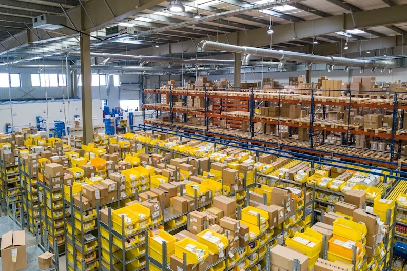
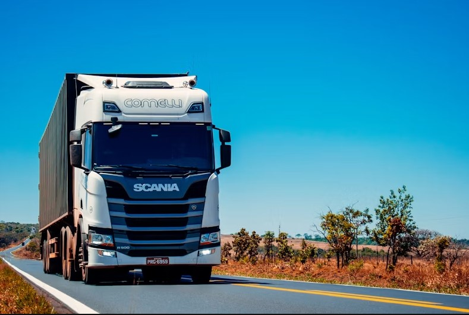
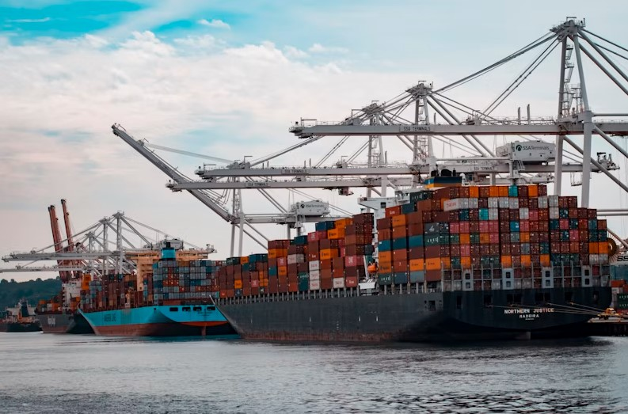

Menos de 24 hrsExpress Aéreo
Conexiones diarias directas entre Tarapoto y Lima. Ideal para documentos urgentes y muestras comerciales.
Ver horarios →Conectamos la región San Martín con todo el Perú de forma rápida y segura.
Conectando la Región San Martín con Lima y las principales ciudades del país.

Menos de 24 hrsConexiones diarias directas entre Tarapoto y Lima. Ideal para documentos urgentes y muestras comerciales.
Ver horarios →
Salidas DiariasSalidas diarias hacia Moyobamba, Yurimaguas, Chiclayo, Trujillo y Lima con tarifas accesibles.
Ver rutas →
EspecializadoEmpaque técnico y logística adaptada para emprendedores de café, cacao y productos autóctonos.
Ver guía →Garantía, rapidez y cuidado total en cada envío.
Tu paquete viaja asegurado con protocolo de embalaje y precinto de seguridad.
Monitorea el estado exacto de tu encomienda desde el origen hasta el punto final.
Múltiples oficinas estratégicas para recojo y envío directo en San Martín.
"Enviamos muestras de café orgánico desde Tarapoto a Lima semanalmente. La rapidez del servicio aéreo es impecable."
"Excelente atención en la oficina central. Mis encomiendas familiares llegan siempre a tiempo."